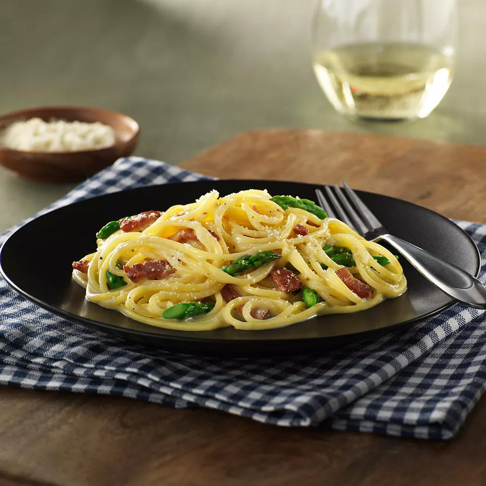

Gluten Free Carbonara

This gluten-free carbonara is a take on a classic Italian pasta d
ish and serves as an easy, delicious gluten-free dinner!
Try this scrumptious carbonara recipe with gluten-free spaghetti
flavored with crispy bacon, asparagus, and Parmesan cheese.
HomGluten Free Carbonara Ingredients
- 1 (12 ounce) box Barilla® Gluten Free Spaghetti
- ½ cup chopped onion
- 1 cup chopped raw bacon
- 1 tablespoon vegetable oil
- 1 bunch asparagus, trimmed, cut 1 inch long on a bias
- 5 large egg yolks, lightly beaten
- ½ cup grated Parmesan cheese
- salt and ground black pepper to taste